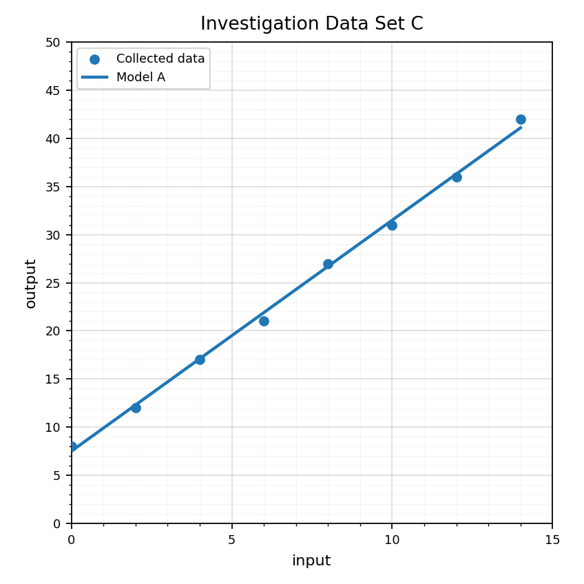
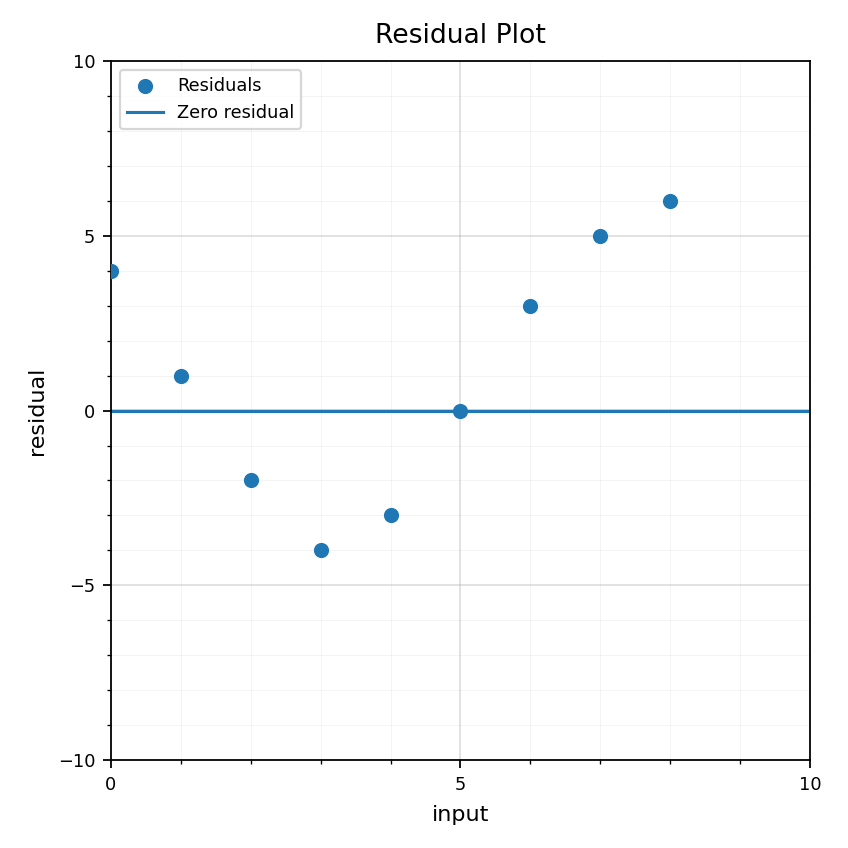

Check Your Understanding 8.4
Spiral Plan and DoK Balance
Unit 8.4: Modeling Investigation
8 focused current-section questions
Unit 7.4: Comparing Function Families
Not used
Unit 6.4: Choosing and Defending Solution Methods
Not used
Check Your Understanding: This is a section-aligned spiral: 8.4 with 7.4 and 6.4. It is not a previous-section spiral.
Use Data Set A. What type of display is shown, and what are the variables?

Define residual in the context of a mathematical model.
Use Data Set B. Choose a reasonable model type and give evidence.

Use Data Set C to make a prediction for input $16$. Explain whether the prediction seems reasonable.

Use the residual plot to explain whether the model should be trusted without question.

A student says, "The model is useful because it goes through most of the points." What else should the student check?
Design a short investigation that could produce data for a model. Name the variables, expected model type, and one limitation.
Use the model comparison graph to write a short conclusion that includes evidence and one limitation.